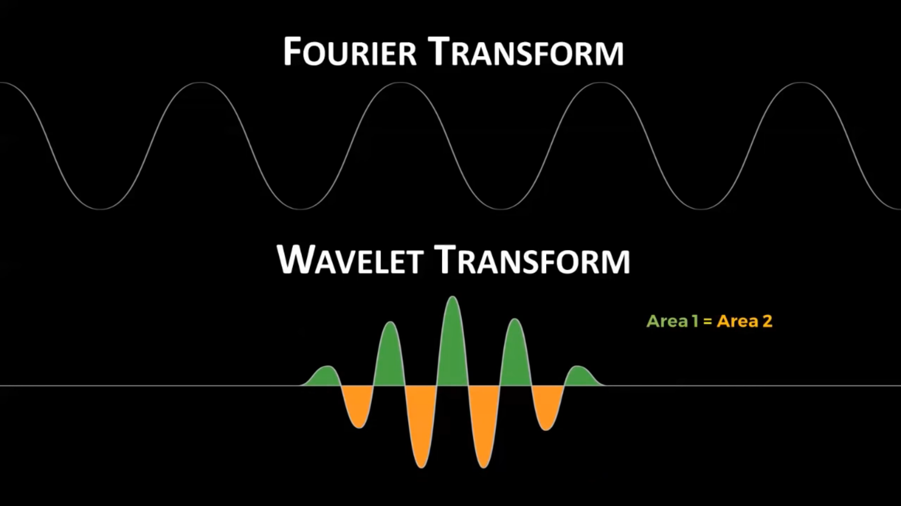
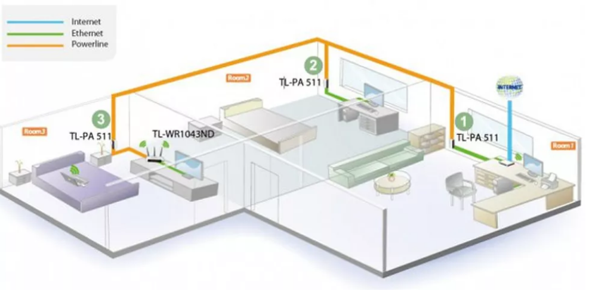
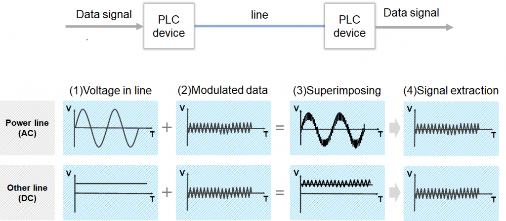

Introdução
Com o avanço da tecnologia, estamos acompanhando cada vez mais crimes ocorrendo nos espaços digitais das
redes. As provas eletrônicas podem ser coletadas de uma ampla gama de fontes, tais como computadores,
smartphones, armazenamento remoto, sistemas aéreos não tripulados, equipamentos embarcados em navios, e
muito mais.
Sendo assim, governos no mundo todo estão sendo confrontados com uma necessidade crescente de investigar
crimes cometidos parcialmente ou totalmente pela Internet ou outros meios eletrônicos. Foi necessário então,
criar procedimentos únicos para buscar, localizar e preservar eficazmente todos os tipos de provas
eletrônicas, e nesse contexto surge a Análise Forense Digital.
Análise Forense Digital é um ramo da ciência forense que trabalha com um conjunto de técnicas para coleta e
exame de evidências digitais, reconstrução de dados e ataques, identificação e rastreamento de invasores.
O principal objetivo da perícia forense digital é extrair dados da evidência eletrônica, analisá-la e
apresentar as conclusões para a acusação. Todos os processos utilizam técnicas forenses sólidas para
garantir que as descobertas sejam admissíveis em tribunal.
Origem
A análise de um disco rígido é um procedimento relativamente bem definido quando comparado à análise de uma
rede, nelas os investigadores enfrentam um número de desafios muito mais complexos. Os dados de sistemas em
rede são dinâmicos e voláteis, tornando difícil fazer uma análise de uma rede sobre um recorte temporal.
Diferentemente de um computador, não é viável desligar uma rede para realizar a investigação, pois os
investigadores possuem a responsabilidade de recolher provas com o mínimo de interrupção aos negócios que
dependam da rede, além disso, o fechamento de uma rede resultará na destruição da maior parte das provas
digitais nelas contidas.
Para tornar mais complexas suas operações, ao contrário do crime no mundo físico, um criminoso pode estar em
vários lugares de uma rede. Esta distribuição da atividade criminosa torna ainda mais difícil isolar a cena
do crime.

Em contrapartida, ter provas distribuídas em muitas máquinas pode ser vantajoso para a investigação. A
distribuição das informações dificulta a destruição das evidências, se as provas são danificadas em um
computador uma cópia pode ser encontrada em outro. Muitas organizações fazem sobretudo um backup de suas
informações regularmente, o que ajuda ainda mais em todo processo.
IEEE 1901
O IEEE 1901 é um padrão para dispositivos de comunicação em alta velocidade através de energia elétrica,
chamados de banda larga sobre linhas de energia (BPL). Com ele, o HomePlug AV foi reconhecido como padrão
internacional neste tipo de tecnologia.
O IEEE 1901 introduz duas técnicas sofisticadas de modulação que são similares ao que é usado hoje no WiFi,
uma baseada em FFT (Fast Fourier Transform) e outra baseada em Wavelet. O Homeplug AV se demonstrou de
extrema
relevância por servir de tecnologia base para a modulação FFT.

Estas inovações ajudaram a resolver problemas da BPL tradicional, como o ruído gerado nas linhas de energia,
Estas inovações ajudaram a resolver problemas da BPL tradicional, como o ruído gerado nas linhas de energia,
Estas inovações ajudaram a resolver problemas da BPL tradicional, como o ruído gerado nas linhas de energia,
as diferentes tensões elétricas ao redor do mundo e a complexidade de se transmitir dados por transformadores.
Funcionamento
O HomePlug AV funciona através da comunicação via rede elétrica já existe de uma residência,
porém os dados passam em uma frequência diferente da energia elétrica, enquanto a energia elétrica
é transmitida na faixa de 50 a 60 Hz, o HomePlug AV transmite na faixa de 1 a 30 MHz, permitindo que
os 2 sinais convivam em harmonia. Permitindo que o sinal de internet funcione, mesmo que a energia elétrica
não esteja passando no fio.

Ao transmitir e receber dados entre dois dispositivos, os dados são modulados no transmissor, e o sinal
Ao transmitir e receber dados entre dois dispositivos, os dados são modulados no transmissor, e o sinal
Ao transmitir e receber dados entre dois dispositivos, os dados são modulados no transmissor, e o sinal
modulado é sobreposto à tensão de alimentação AC ou DC. No receptor, os dados são extraídos separando a
modulado é sobreposto à tensão de alimentação AC ou DC. No receptor, os dados são extraídos separando a
modulado é sobreposto à tensão de alimentação AC ou DC. No receptor, os dados são extraídos separando a
tensão de alimentação e o sinal modulado com um filtro, desmodulando o sinal.

Segurança
A rede elétrica de casas ou salas comerciais, conectadas a um mesmo transformador é compartilhada.
O vizinho de um usuário do HomePlug pode, na rede elétrica de sua própria residência,
escutar os pacotes do HomePlug (sniffing).
Para evitar isso, os dispositivos criptografam os pacotes antes de fazer o envio. No entanto, em muitos
casos,
os fabricantes usam uma mesma chave padrão para todos os aparelhos. O objetivo é facilitar a vida do usuário
que
não precisará configurar as chaves de criptografia em cada dispositivo.
Mas essa prática vem com um grande risco atrelado, um atacante com acesso à rede elétrica poderá alterar a
chave
de todos os HomePlug para um determinado valor e então receber todos os dados da rede. Enquanto o usuário
afetado,
provavelmente, não irá notar o ataque de imediato, pois a sua rede vai continuar funcionando.
Uma solução que existe para que os dados de uma determinada rede PLC não cheguem até outras, é a instalação
de um
filtro passa-baixa na entrada da rede de energia elétrica que alimenta a rede em questão. Com esse filtro,
serão
bloqueadas as frequências usadas pela rede PLC. Esses filtros são, entretanto, caros e requerem um
profissional
especializado para a instalação.
Prós e Contras
As redes PLC apresentam a vantagem de utilizar a rede elétrica já existente. Entretanto, pelo mesmo motivo, têm também grandes problemas para a propagação de sinais, já que estas linhas não foram construídas com o intuito de realizar transmissões de dados.
Vantagens
Comparado à Wi-Fi
-
Segurança: Por ser na rede cabeada, fica mais difícil fazer eavesdropping e falsificar uma rede.
Alcance: O HomePlug tem um alcance maior que o do Wi-Fi e pode ser útil em locais onde ondas eletromagnéticas têm dificuldade de alcançar como elevadores, subsolos e navios de aço.
Comparado à Ethernet
-
Custo: Não é necessária a instalação de novos cabos, o que economiza não só no preço dos cabos mas também
nas possíveis
obras que teriam de ser feitas.
Desvantagens
Comparado à Wi-Fi
-
Velocidade: A velocidade máxima de roteadores Wi-Fi geralmente é maior que a velocidade dos HomePlug.
Mobilidade: O equipamento do homeplug deve ficar em uma posição fixa.
Comparado à Ethernet
-
Velocidade: O cabo ethernet, como foi feito para trafego de rede, é mais rápido que o HomePlug.
Estabilidade: Como o HomePlug não usa um meio dedicado ele sofre interferência de outros aparelhos utilizando a rede elétrica.

Conclusão
Perguntas
O que é a Análise Forense?
Análise Forense Digital é um ramo da ciência forense que trabalha com um conjunto de técnicas para coleta e exame de evidências digitais, reconstrução de dados e ataques, identificação e rastreamento de invasores.Qual a vantagem e a desvantagem de termos provas distribuídas nas redes?
A vantagem é que a distribuição das informações dificulta a destruição das evidências, pois se as provas forem danificadas em uma máquina uma cópia pode ser encontrada em outra. A desvantagem é que torna mais difícil isolar a cena do crime.Como criminosos podem usar o Anonimato Online? E investigadores?
Criminosos usam para esconder suas identidades e assim não deixar rastros quando cometem crimes, diminuindo a chance de serem descobertos. Investigadores podem criar identidades falsas e se passar por criminosos para adquirir informações sigilosas.Qual a maior dificuldade de se analisar provas nas camadas de rede e transporte?
Como essas camadas possuem muitas informações, torna-se muito complexo a análise para distinguir as informações importantes para a investigação das não relevantes.Ao apagar um arquivo do computador e esvaziar a lixeira, ainda é possível recuperá-lo? E se ocuparmos o espaço físico com outros arquivos?
Sim. Ao apagar da lixeira o sistema operacional apenas apaga a referência para o arquivo, mas com ferramentas de análise forense é possível restaurar integralmente o arquivo se ele ainda não tiver sido reescrito. Mesmo que o espaço seja ocupado com outros arquivos, ainda é possível que tenhamos informações sobre o arquivo anterior no slack-space.Bibliografia
Eoghan Casey, "Digital Evidence and Computer Crime", Third Edition
Cristiano Monteiro Nunes, "A Análise de Tráfego em Redes como Método de Coleta de Evidências Digitais"
GARFINKEL Simon, Anti-Forensics: Techniques, Detection and Countermeasures
Post do Blog da Netresec - Link: https://www.netresec.com/?page=Blog&month=2011-01&post=Facebook-SSL-and-Network-Forensics
Post do Blog da BC Security - Link: https://www.bc-security.org/post/ja3-s-signatures-and-how-to-avoid-them